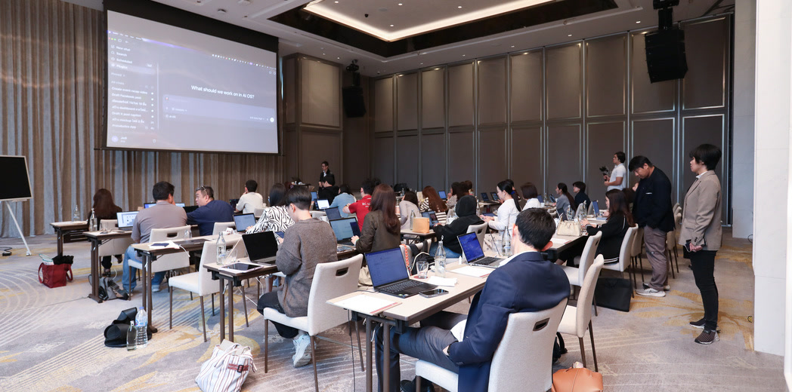

ประกันภัย · Private Training

Limitless Corporate AI Training · 1-Day Private Workshop
A Core Part of the CEO AI 10X System
สร้างทีมที่ทำงานได้เร็วขึ้นด้วย CEO AI 10X System
พาทีม 15–30 คน เปลี่ยนงานจริงของแต่ละแผนกให้เป็น AI-enabled Workflow
ลดงาน Manual และงานซ้ำ เพิ่มความเร็วในการส่งมอบ และทำให้ทีมเห็นว่า AI ควรเข้ามาช่วยตรงไหน โดยคนยังควบคุมคุณภาพและการตัดสินใจ
ใช้ Claude เป็นเครื่องมือหลักในการสอน
25+ รุ่น2,000+ ผู้บริหารและเจ้าของธุรกิจ
สอนโดยโค้ชเจไดCEO · AI & Business Growth Coach
15–30 PEOPLEREAL WORKFLOWSAI-ENABLEDMEASURABLE IMPACT
จบหนึ่งวัน ทีมของคุณจะกลับไปพร้อมภาพชัดว่า AI ควรช่วยงานตรงไหน และเริ่มต้นอย่างไร
01AI Workflow Mapเห็นงานซ้ำและ Workflow ที่ควรเริ่มก่อน
02Priority Use Caseทดลองใช้ AI กับงานจริงภายในคลาส
03Adoption Frameworkวัดเวลาที่ได้คืนและขยายไปยังทีมอื่น
A Core Part of the CEO AI 10X System
Corporate Implementation for Teams
นี่คือระบบพัฒนาความสามารถของทีมให้ใช้ AI กับงานธุรกิจจริง ไม่ใช่การอบรมเครื่องมือแบบแยกส่วน
ทีมคิดบนบริบทธุรกิจได้เร็วขึ้น ตัดสินใจจากข้อมูลที่พร้อมขึ้น และเปลี่ยนงาน manual ให้เป็น workflow ที่นำกลับมาใช้และขยายผลต่อได้
FASTER THINKINGBETTER DECISIONSFASTER EXECUTIONSCALABLE WORKFLOWS
SELECTED CORPORATE CLIENTS
ร่วมพัฒนาทีมให้พร้อมกับยุค AI
ส่วนหนึ่งขององค์กรที่เราได้ร่วมจัดการเรียนรู้และอบรม
 Samsung Life InsuranceChia TaiBTS Group
Samsung Life InsuranceChia TaiBTS Group Jasmine GroupSmile Insure
Jasmine GroupSmile Insure TGM
TGMMuang Thai Life
The Art Hospital
Central Restaurants Group
IN THE ROOM · CORPORATE TRAINING
บรรยากาศการเรียนรู้
จากองค์กรที่เราร่วมงาน
พบกับทีมจากหลากหลายอุตสาหกรรม ผ่านภาพการบรรยาย เวิร์กช็อป และการโค้ชระหว่างลงมือทำ
เลื่อนชมได้ทุกภาพ · แตะภาพเพื่อขยาย
10 ภาพ


ประกันภัย
Samsung Life Insurance


ธุรกิจเกษตร
Chia Tai


เทคโนโลยีและโทรคมนาคม
Jasmine Group


ขนส่งและโครงสร้างพื้นฐาน
BTS Group


ยานยนต์
Honda Nakhon Ratchasima


แฟชั่นและค้าปลีก
Boutique Newcity


ประกันภัย
Smile Insure


อาหารและการผลิต
TGM · Thai-German Meat Product


คลินิกและสุขภาพ
Fern Clinic


อบรมทีมองค์กร
JTK Group


ประกันภัย
เมืองไทยประกันชีวิต


ท่องเที่ยว · Private Training
Kay Travel


ธุรกิจเกษตร · งานบรรยาย
สมาคมผู้เลี้ยงไก่ไข่ภาคใต้


การลงทุน · งานบรรยาย
ThaiVI · The Intelligent Investor 2026


ประกันภัย · งานบรรยาย
MDRT FEST 2026


Watch the AI Workforce Model in Action
ดูวิธีใช้ AI Agent
เพื่อขยายศักยภาพของทีม
วิดีโอนี้จะช่วยให้ผู้บริหารเห็นภาพว่า AI Agent เข้ามารับงานแต่ละบทบาท ลดภาระงานซ้ำ และเพิ่มกำลังการทำงานของทีมได้อย่างไร ก่อนนำแนวคิดไปใช้กับ Workflow จริงในองค์กร
The New Workforce Model
พนักงานหนึ่งคน
มี AI Agent 10 บทบาท
Agent แต่ละตัวมีหน้าที่ บริบท และมาตรฐานงานเฉพาะด้าน พนักงานยังเป็นผู้ตั้งเป้าหมาย ใช้วิจารณญาณ และอนุมัติผลลัพธ์
1
EMPLOYEE
Human judgment
& approval
& approval
- 01Research Agentค้นหา สรุป และเปรียบเทียบข้อมูล
- 02Meeting Agentเตรียมประชุม สรุปประเด็น และ Next Actions
- 03Report Agentเปลี่ยนข้อมูลให้เป็นรายงานที่พร้อมตรวจ
- 04Data Analyst Agentวิเคราะห์ตัวเลขและอธิบายสิ่งที่เปลี่ยน
- 05Sales Agentเตรียมข้อมูลลูกค้า Proposal และ Follow-up
- 06Customer Insight Agentสรุปคำถาม ปัญหา และ Feedback
- 07Content Agentเปลี่ยนความรู้ธุรกิจให้เป็น Draft Content
- 08SOP Agentเปลี่ยนความรู้จากคนเป็นขั้นตอนทำงาน
- 09Quality Control Agentตรวจ Accuracy, Format และมาตรฐาน
- 10Project Follow-up Agentสรุปสถานะ งานค้าง และผู้รับผิดชอบ
ExecutiveSalesMarketingOperationsFinanceHR & PeopleCustomer SupportBack Office
1พนักงาน10 Agent Roles
→
15พนักงาน150 Agent Roles
→
30พนักงาน300 Agent Roles
เป็นภาพของ Agent Roles และ Workflow ที่องค์กรสามารถค่อยๆ พัฒนาต่อ เป้าหมายของ Workshop คือสร้าง Agent ตัวแรกให้ถูกวิธีและวางระบบสำหรับขยายผล
The 30-Minute Effect
เวลาที่ได้คืน เริ่มวัดได้ตั้งแต่คนแรก
30นาทีต่อวัน
เท่ากับ10ชั่วโมงต่อเดือน
หรือ120ชั่วโมงต่อคนต่อปี
ที่ 500 บาท/ชม.60Kบาทต่อคนต่อปี
Calculate Your Team
ลองใส่ตัวเลขของทีมคุณ
ปรับจำนวนคน เวลาที่คาดว่าจะลดได้ และมูลค่าเวลาเฉลี่ย เพื่อเห็นขนาดของ Capacity ที่ซ่อนอยู่ในงานประจำ
Potential Capacity Recovered
3,600ชั่วโมงต่อปี
มูลค่าเวลาที่อาจได้คืน1,800,000 บาท/ปี
300 ชั่วโมง/เดือน150,000 บาท/เดือน
เป็น Scenario สำหรับประเมินศักยภาพ ไม่ใช่การรับประกันผลลัพธ์ ผลจริงขึ้นอยู่กับงานและการนำไปใช้ของทีม
นำ Scenario นี้ไปคุยต่อภายในสรุปหลักสูตร ภาพอบรมจริง งบประมาณ และแนวทางวัดผล พร้อมตัวเลขของทีมคุณ
เอกสารเสนออนุมัติ (PDF)
The Cost Of Waiting
ถ้า Workflow เดิม
ยังใช้เวลาเท่าเดิม
ตัวอย่างเมื่อเวลาหายไปเพียง 30 นาทีต่อคนต่อวัน และมูลค่าเวลาเฉลี่ย 500 บาทต่อชั่วโมง
ขนาดทีม1 เดือน3 เดือน12 เดือน
15 คน75,000225,000900,000 บาท
30 คน150,000450,0001,800,000 บาท
งานซ้ำยังอยู่กับคนเก่งแต่ละแผนกทดลองแยกกันWorkflow ไม่กลายเป็น Knowledgeผู้บริหารยังวัดผลไม่ได้
Limitless AI Agent Workforce Method
จาก Agent ตัวแรก
สู่ระบบที่ขยายได้
Role
กำหนด Job Description เป้าหมาย และขอบเขตของ Agent
Context
เตรียมข้อมูลธุรกิจ Knowledge ตัวอย่าง และข้อกำหนด
Workflow
แตกงานตั้งแต่รับ Input จนถึง Output ที่ต้องการ
Skill
เปลี่ยน Workflow ที่ผ่านการทดลองให้เรียกใช้ซ้ำได้
Review
กำหนด Accuracy, Privacy, Quality และ Human Approval
Scale
เริ่มจาก Agent ตัวแรก แล้วขยายไปยังงานและแผนกอื่น

What The Team Leaves With
ความสามารถที่ทีมจะนำกลับไปใช้ต่อ
- 01Agent Role Map สำหรับงานจริงของผู้เข้าอบรมแต่ละคน
- 02Priority Agent และ Workflow ตัวแรกที่ทีมได้ทดลองภายในคลาส
- 03Context, Instructions, Definition of Done และจุดตรวจโดยคน
- 04Baseline และแนวทางขยายจาก Agent ตัวแรกไปสู่ Agent Team
1-Day Workshop Flow
เริ่มจากงานจริง
แล้วสร้าง Agent ให้ทำงานเป็น
AI Agent Workforce for Business
เห็นภาพว่า Agent ทำงานกับ Context, Files และ Workflow ได้อย่างไร
Find The Right Work
ค้นหางานที่เกิดซ้ำ มี Input และ Output ชัด และควรเริ่มก่อน
Design Role & Context
กำหนดหน้าที่ Knowledge, Instructions และ Definition of Done
Run The Workflow
ทดลองสร้าง Output ตรวจผล และแก้จุดที่ยังไม่พร้อมใช้
Quality & Human Control
วางจุดตรวจ Accuracy, Privacy, Quality และการอนุมัติโดยคน
Turn Into Skill & Scale
เปลี่ยน Workflow ให้เรียกซ้ำได้ และเลือก Agent ตัวถัดไป

Built From The Field
สอน AI จากสนามธุรกิจจริง
25+รุ่น
2,000+ผู้บริหารและเจ้าของธุรกิจ
800+ผู้เข้าร่วม MDRT Fest Thailand
ประสบการณ์การบรรยายและอบรม
Falcon Insurance · Samsung Life Insurance · Jasmine Group · Chia Tai · Boutique Newcity · เมืองไทยประกันชีวิต · MDRT Fest Thailand
Your Trainer
โค้ชเจได ไตรนุภาพ จิระไตรธาร
AI & Business Growth Coach for Entrepreneursเจได ไตรนุภาพ คือซีอีโอที่สอน AI จากสนามจริง ปัจจุบันบริหาร Creatus Corporation องค์กรอายุ 44 ปีที่ผ่านมาแล้วทุกวิกฤตเศรษฐกิจ และอยู่เบื้องหลังตัวเลขธุรกิจกว่า 3,000 ล้านบาทตลอด 15 ปีของการลงมือทำจริง
CEO · Creatus Corporation / University of Manchester / National University of Singapore / INSEAD / UC Berkeley / Anthropic Investor
Best Fit
เหมาะกับองค์กรที่พร้อมเปลี่ยน Workflow จริง
- ต้องการนำ AI Agent ไปใช้กับงานจริงในหลายแผนก
- มีงานเอกสาร ข้อมูล รายงาน Research หรือ Back Office จำนวนมาก
- ต้องการเพิ่มความเร็วโดยทีมยังควบคุมคุณภาพและการอนุมัติ
- มีผู้บริหารหรือหัวหน้าทีมพร้อมผลักดันการใช้งานต่อ
- พร้อมให้ผู้เข้าอบรมลงมือทำด้วย Laptop และ AI Account
Not Designed For
Workshop นี้อาจไม่เหมาะ หาก...
- ต้องการเพียงการบรรยายสร้างแรงบันดาลใจ
- คาดหวัง Automation สำเร็จครบทุกแผนกภายในหนึ่งวัน
- ต้องการให้วิทยากรติดตั้งระบบทั้งหมดหลังคลาส
- ไม่มีผู้รับผิดชอบนำ Agent ไปทดลองต่อ
Corporate Training Fee
1-Day Private Training
Frequently Asked Questions
คำถามที่ผู้บริหารถามบ่อย
ผู้เข้าอบรมต้องมีพื้นฐาน AI หรือไม่?
Workshop ปรับให้รองรับทีมที่มีระดับความคุ้นเคยต่างกันได้ ผู้เข้าอบรมควรใช้คอมพิวเตอร์ได้และพร้อมลงมือทำตลอดวัน
ภายในหนึ่งวันจะสร้าง AI Agent ได้กี่ตัว?
แต่ละคนจะออกแบบ Agent Role Map และแต่ละกลุ่มจะเริ่มทดลอง Priority Agent หรือ Reusable Workflow อย่างน้อย 1 ตัว เป้าหมายคือสร้างตัวแรกให้ถูกวิธีและขยายต่อได้
10 AI Agents ต่อคนหมายถึงอะไร?
เป็นภาพของ Agent Team ที่ค่อยๆ พัฒนาตามงานของแต่ละตำแหน่ง ไม่ได้หมายถึงการสร้าง Agent ครบ 10 ตัวภายในวันอบรม
เนื้อหาปรับตามธุรกิจได้หรือไม่?
ตัวอย่าง กิจกรรม และ Agent Focus จะถูกปรับตามประเภทธุรกิจ แผนก และระดับของผู้เข้าอบรม
จะได้ระบบ Automation สำเร็จหลังจบ Workshop หรือไม่?
Workshop เน้นการพัฒนาความสามารถของทีม การออกแบบ Agent Role และทดลอง Workflow การติดตั้ง Automation เต็มรูปแบบอยู่นอกขอบเขตการอบรมหนึ่งวัน
Workshop Availability
เช็กคิว Corporate AI Training
แจ้งประเภทธุรกิจ จำนวนผู้เข้าอบรม และ Workflow ที่อยากให้ทีมทำได้เร็วขึ้น เพื่อดูแนวทาง Workshop ที่เหมาะกับองค์กร